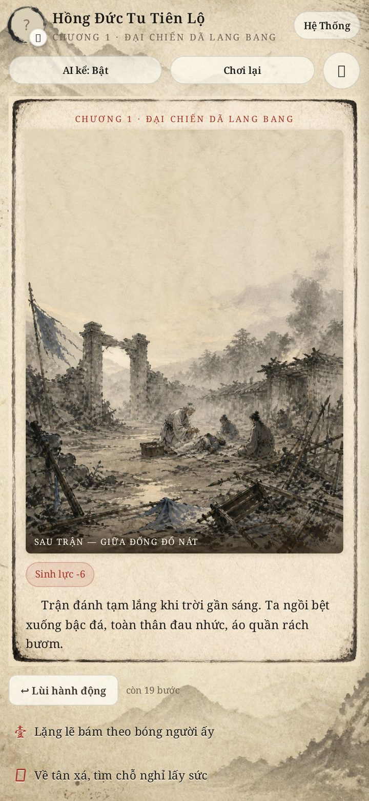
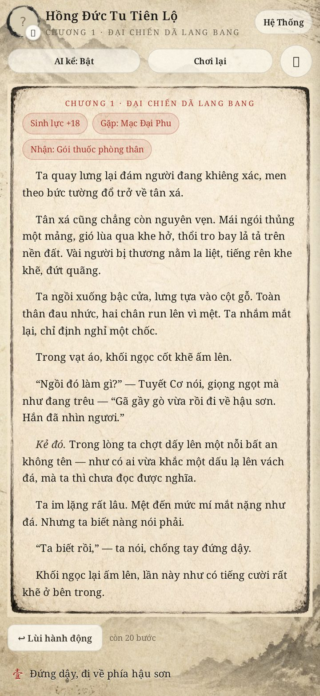
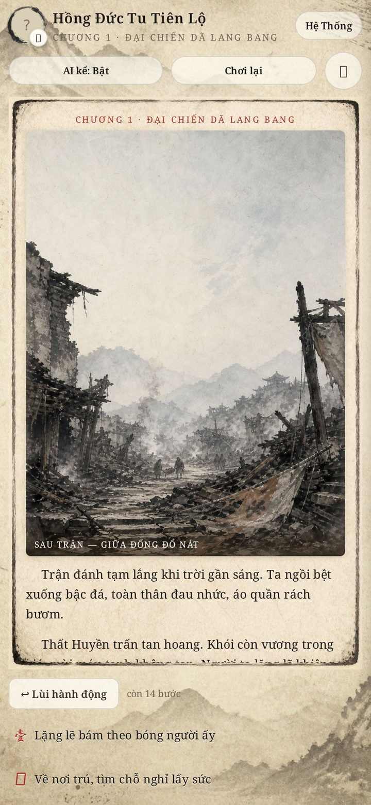
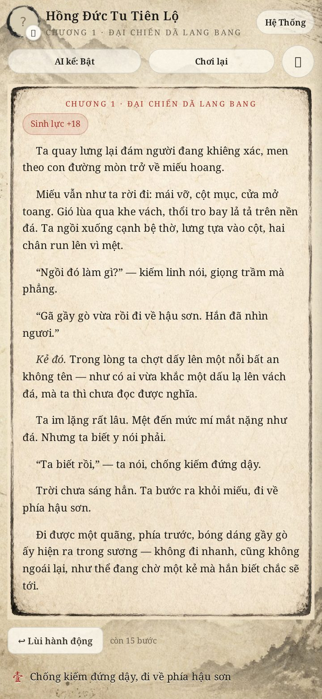

Bản chạy thật trong trình duyệt ở khổ điện thoại 430×932 · chụp từ chính trang game
Trước đây ở cảnh sau trận, hai nút đều dẫn về cùng một đoạn — bấm nút nào cũng ra y hệt. Giờ mỗi nút rẽ một đường, và đường nghỉ có nội dung riêng, có tiếng nói riêng.
Thêm đoạn c1_p16b nằm giữa c1_p16 và c1_p17:
một mình trong tân xá đêm ấy, Tuyết Cơ hiện ra, rồi ngươi tự quyết định đứng dậy đi tiếp.


Nhánh này cũng dính đúng lỗi cũ, nên chữa luôn cho đồng bộ. Thêm đoạn c1_d14b:
về miếu hoang nghỉ, kiếm linh lên tiếng nhắc về “gã gầy gò” vừa đi ngang.


Hai ảnh nền và hai đoạn tiếng của hai cảnh mới chưa có file. Prompt vẽ và prompt tiếng đã nằm sẵn trong Xưởng, chỉ chờ vẽ và tạo. Khi chưa có file thì cảnh vẫn chạy, chỉ là ô ảnh trống và chưa có tiếng riêng — giao diện không vỡ.
bc_tan_xa_nghi_dem.jpg — ảnh tân xá đêm (nhánh môn phái)bc_mieu_hoang_nghi_dem.jpg — ảnh miếu hoang đêm (nhánh tán tu)tan_xa_nghi_dem — tiếng 10 giây, có thoại Tuyết Cơ (18 nữ) và MC (16 nam)mieu_hoang_nghi_dem — tiếng 10 giây, có thoại kiếm linh và MC (16 nam)Xưởng ảnh: ../xuong/ · Xưởng âm thanh: ../xuong-am/